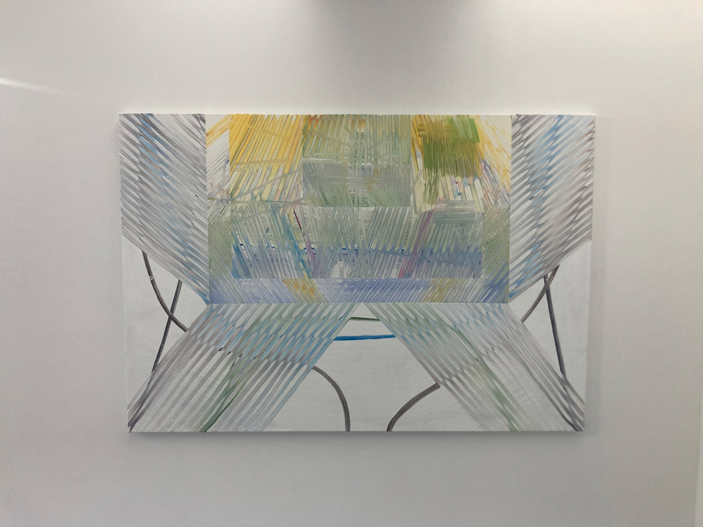

시원하게 지나가는 낙서
<안녕하세요. 재훈.
깜빡 잠들었다가 일어나 메일을 보냅니다.
메일이 너무 늦어져 미안해요.
마음 한구석에 성시경의 회화에 대해 쓰는 것에 대한 부담이 있었나 봅니다.
전시 서문에서 제가 접할 수 있었던 건 그의 회화가 '전체적인 구성을 전제하지 않은 채,
무의식적인 낙서 혹은 프리 재즈에서의 극단적인 즉흥 연주' 같다는 것이었어요.
이러한 정보를 근거로 회화가 만들어진 과정을 상상하면서 볼 수 있었습니다.
인상적이었던 것은 비슷한 과정으로 만들어졌을 회화가 꽤나 다른 모습으로 보여지고 있는 것이었습니다.
위 그림처럼 '낙서'라고 생각했을 때 그의 자연스럽게 부합하는 회화들이 있었던 반면, 처음부터 구상하지 않고 이러한 형태에 이를 수 있었을까 싶은 회화들도 있었습니다.
 성시경, 쇼케이스 (잠보니가 다녀간 후), 2021전자의 회화의 경우 낙서가 가득 채워져 있는 공책을 다 분리한 뒤에 다시 꼴라주 한 것 같다는 생각이 들었어요.
화면이 잘게 조각나 겹쳐져 있는 것 같다고도 표현할 수 있을 것 같습니다.
층이 나눠져 있지만 두께감이 느껴지기 보다는, 얇은 평면인 느낌이 있는 것 같아요.
후자의 경우는, 어떻게 이러한 형태에 이를 수 있었을까 혹은 어떻게 여기서 멈출 수 있었을까 하는 생각이 많이 들었던 것 같아요.
위에 제가 제시한 회화도 그렇지만, 여백이 눈에 띄는 작업들이 많았던 걸 재훈도 기억할 수 있을 것입니다.
그리는 과정이 아주 섬세하거나 예민한 감각속에서 이루어졌을 거라 상상해볼 수 있었어요.
먼저 이야기한 작업들이 아기자기하게 보는 재미가 있었다면, 다른 작업들은 시각적인 쾌감이 있다고 느꼈습니다.
좋은 집과 넉넉한 재산이 있다면 한 점 구매하고 싶은 쾌감이었습니다.
어제는 TINC에 다녀왔는데요.
다음 메일에서는 그곳에서 봤던 회화에 대해서 써보도록 하겠습니다.
그럼 안녕히 주무시구요.
항상 고맙습니다.
손 드림.